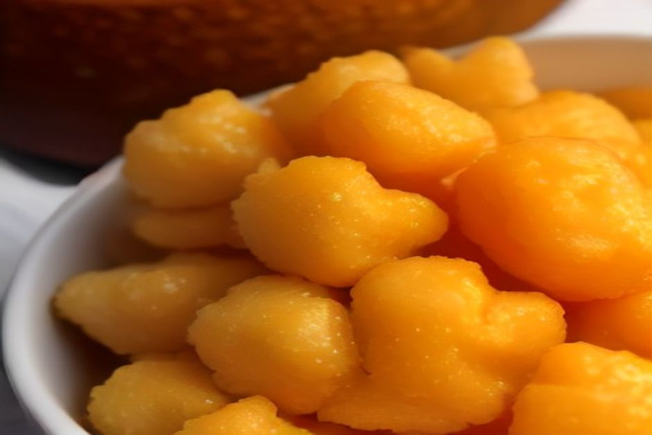

El milho frito es el acompañamiento de maíz frito de Madeira: cubos densos con una corteza crujiente por fuera, cocinados con ajo y couve, y presentes en casi todas las mesas donde también se sirve espetada. Esto es lo que es en realidad, cómo se prepara y dónde encontrarlo.
¿Qué es el milho frito?
El milho frito, literalmente «maíz frito» en portugués, es un acompañamiento madeirense de maíz firme y enfriado, cortado en pequeños cubos y frito en abundante aceite hasta que el exterior queda dorado y crujiente mientras el interior sigue blando y denso. Se sitúa a medio camino entre la polenta y un buñuelo salado, y es uno de los pocos platos de la isla que casi nunca aparece solo: está pensado para acompañar carne a la parrilla.
¿De qué está hecho el milho frito?
La base es harina de maíz blanco, cocinada a fuego lento con agua, manteca o mantequilla, ajo machacado y couve desmenuzada, la col de hoja suelta portuguesa, hasta que la mezcla espesa y se acerca a una polenta muy firme. Esa mezcla —llamada milho cozido, o «maíz cocido», en su forma sin freír— se deja enfriar y cuajar durante un par de horas, después se corta en cubos y se fríe en aceite caliente hasta que cada pieza queda con una corteza crujiente.
¿Es el milho frito lo mismo que la polenta?
No exactamente. Ambos parten de maíz cocido que cuaja lo bastante firme como para cortarse, pero la polenta italiana suele asarse a la parrilla o freírse en sartén en lonchas, mientras que el milho frito es más denso, se mezcla con ajo y couve antes de cuajar, y siempre se corta en pequeños cubos antes de freírse en abundante aceite. La verdura y el ajo le dan un punto salado y ligeramente amargo que la polenta sencilla no tiene, y la forma en cubo pequeño supone mucha más superficie crujiente por bocado.
¿Por qué el milho frito acompaña siempre a la espetada?
La espetada —trozos de ternera sazonados con ajo y hoja de laurel, ensartados y asados sobre madera, tradicionalmente de laurel— es el plato principal por excelencia de Madeira, y el milho frito es su acompañamiento habitual en casi toda la isla. El maridaje funciona porque el maíz frito absorbe en la mesa los jugos de ajo y vino de la carne, cumpliendo la misma función que el pan o la patata en otros lugares, pero con un punto crujiente que el almidón simple no ofrece.
¿De dónde viene el milho frito?
El maíz llegó a Madeira con los colonos portugueses en el siglo XV y se adaptó bien a las empinadas parcelas en terrazas de la isla, convirtiéndose rápidamente en un alimento básico junto con la patata y el pan en los hogares rurales. El milho frito nació de una costumbre práctica más que de un recetario: las gachas de maíz sobrantes, una vez que se habían enfriado y endurecido de un día para otro, se cortaban y se freían en lugar de recalentarse blandas, y el resultado crujiente se convirtió en un plato por derecho propio.

¿Dónde se puede probar el milho frito en Madeira?
Casi cualquier restaurante que sirva espetada traerá milho frito junto a ella sin que haga falta pedirlo, ya que ambos se tratan como un conjunto y no como platos independientes de la carta. El plato está especialmente asociado a Câmara de Lobos y Estreito de Câmara de Lobos, los pueblos de pesca y viñedos al oeste de Funchal donde las churrascarias al aire libre asan la espetada en brochetas de madera colgadas sobre la mesa.
¿Se puede encontrar cerca de un paseo en barco por la costa?
Sí: Câmara de Lobos, uno de los pueblos más asociados con el milho frito y la espetada, es la primera parada del Day Trip de Chifbay desde Funchal, así que una mañana en barco por la costa combina de forma natural con un almuerzo tardío en el pueblo. Es una buena manera de completar el día: primero acantilados y calas desde el agua, después la comida más tradicional de la isla en tierra firme.
La espetada se lleva toda la atención. El milho frito es la razón por la que el plato nunca se siente completo sin él.
Si la espetada es el plato que todo el mundo pide en Madeira, el milho frito es el que a nadie se le ocurre pedir aparte: simplemente aparece, crujiente por fuera e imprescindible, y hace calladamente la mitad del trabajo de la comida.
Preguntas frecuentes
¿De qué está hecho el milho frito?
Maíz cocinado con agua, manteca o mantequilla, ajo y couve hasta quedar firme, después enfriado, cortado en cubos y frito en abundante aceite hasta quedar crujiente.
¿Es el milho frito lo mismo que la polenta?
Parte de una base similar, pero es más denso, se sazona con ajo y verduras, y siempre se fríe en pequeños cubos crujientes en lugar de asarse en lonchas.
¿Con qué se sirve normalmente el milho frito?
Con la espetada, la brocheta de ternera asada de Madeira: ambos se consideran un único maridaje clásico.
¿De dónde viene el milho frito?
Surgió a partir de las gachas de maíz sobrantes después de que el maíz se convirtiera en cultivo básico en las terrazas de Madeira en el siglo XV.
¿Dónde se puede probar el milho frito en Madeira?
La mayoría de los restaurantes tradicionales lo sirven con espetada, especialmente las churrascarias de Câmara de Lobos y Estreito de Câmara de Lobos.